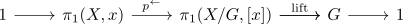
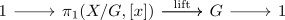

simply connected covering like group action and pi_1
Proposition
Let $B$ be a topological space, $p: E \rightarrow B$ be a simply connected covering given by a covering-like group action
\begin{align*}
E \times G \rightarrow E/G = B
\end{align*}
then for the fundamental group, it holds, that
\begin{align*}
\pi_1(B,b) = G
\end{align*}
Proof
corollary of
where

becomes

and hence $\mathrm{ker}(\mathrm{lift}) = \mathrm{im}(1) = 1$ and $\mathrm{im}(\mathrm{lift}) = \mathrm{ker}(1) = G$, hence a group-isomorphism